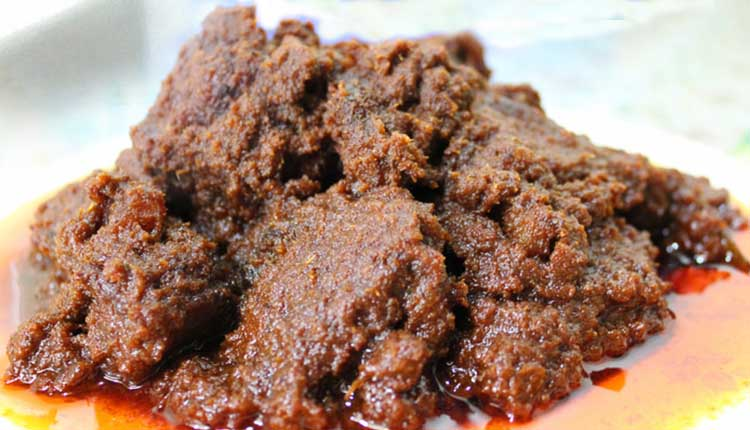

rendang adalah masakan daging dengan cita rasa pedas yang diolah dengan memakai campuran berbagai bumbu dan rempah-rempah. Untuk menghasilkan rendang daging dibutuhkan proses memasak dengan cara memanaskan berulang-ulang menggunakan santan kelapa. Membutuhkan waktu berjam-jam (kurang lebih sekitar 4 jam) untuk menyelesaikan proses memasaknya, yaitu hingga daging dan bumbunya menjadi kering dan berwarna hitam pekat. Masakan rendang mampu tahan hingga berminggu-minggu (dalam suhu ruangan)
Resep masakan rendang daging Padang
Bahan Utama dari resep masakan rendang daging Padang adalah sebagai berikut:
- 2 liter santan (dihasilkan dari 2 buah kelapa tua)
- 1.5 kg daging
Bahan bumbu dan rempah untuk resep membuat rendang daging Padang:
- 2 lembar daun kunyit, simpulkan
- 4 lembar daun jeruk purut
- 2 cm asam kandis(gelugur)
- 2 batang daun serai, memarkan
Bumbu resep daging rendang Padang:
Haluskan:
- 12 butir bawang merah
- 2 cm jahe, bakar
- 1 sdt jintan, sangrai
- 1/2 sdt pala
- Penyedap rasa secukupnya
- 100 g cabe merah besar
- 3 cm kunyit, bakar
- 1/2 sdm ketumbar
- 2 sdt garam
- 6 siung bawang putih
- 5 butir kemiri
- 100 g cabe merah keriting
- 2 cm lengkuas
Cara memasak resep rendang daging sapi spesial Padang
- Kita olah dulu daging yang telah disiapkan: potong-potonglah daging rendang dengan bentuk kotak-kotak(dadu) atau sesuai dengan ukuran yang Anda inginkan.
- Sebaiknya tidak memotong daging dengan ukuran terlalu kecil, supaya pada saat daging dimasak, tidak membuat daging menjadi hancur.
- Siapkan wajan berukuran besar. Tuangkan santan ke dalamnya.
- Masukkan juga serai, irisan bawang merah, asam dan daun kunyit.
- Aduk-aduk bumbu sampai benar-benar mendidih, yakinkan bahwa santan yang sedang dimasak tidak pecah.
- Selama proses ini Anda sebaiknya mengaduk-aduk santan dengan perlahan-lahan dan hingga benar-benar mendidih dan merata.
- Jika santan telah mendidih, masukkanlah bumbu yang telah dihaluskan kedalamnya dengan perlahan-lahan dan sesekali mengaduk-aduk. Lakukan selama 20-30 menit.
- Bila santan terlihat telah berminyak, Masukanlah potongan daging rendang yang sudah dibersihkan.
- Setel nyala api kompor menggunakan api kecil atau sedang, lalu masaklah hingga santan mengental dan mengering dan juga bumbu meresap ke dalam pori pori daging.
- Lanjutkan memasak hingga daging menjadi empuk dan matang dengan merata, sabar dan tekunlah untuk mengaduk-aduk perlahan dan terus-menerus supaya bagian dasar tidak menjadi gosong dan daging matang dengan sempurna.
Bagaimana? Ternyata resep daging rendang padang cukup sederhana dan tidak sulit untuk dipraktekkan. Selamat mencoba dan semoga bermanfaat